Programme jour par jour

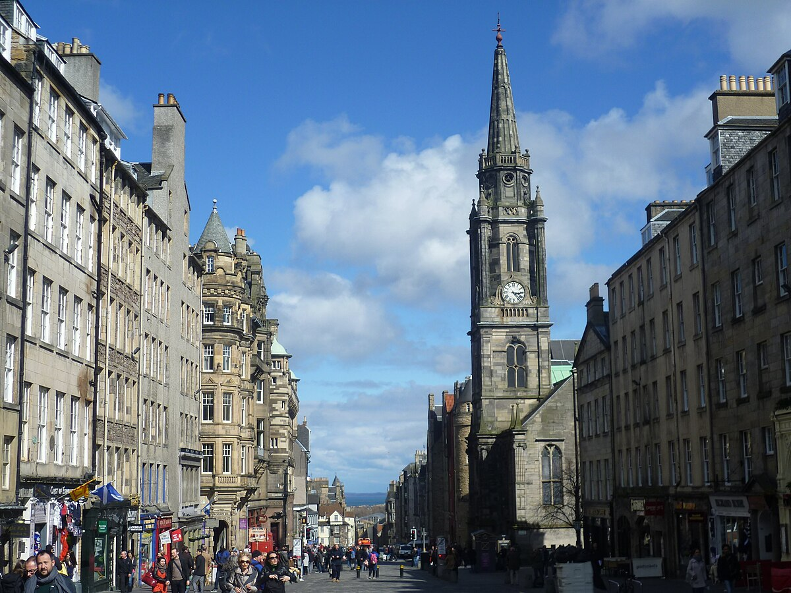
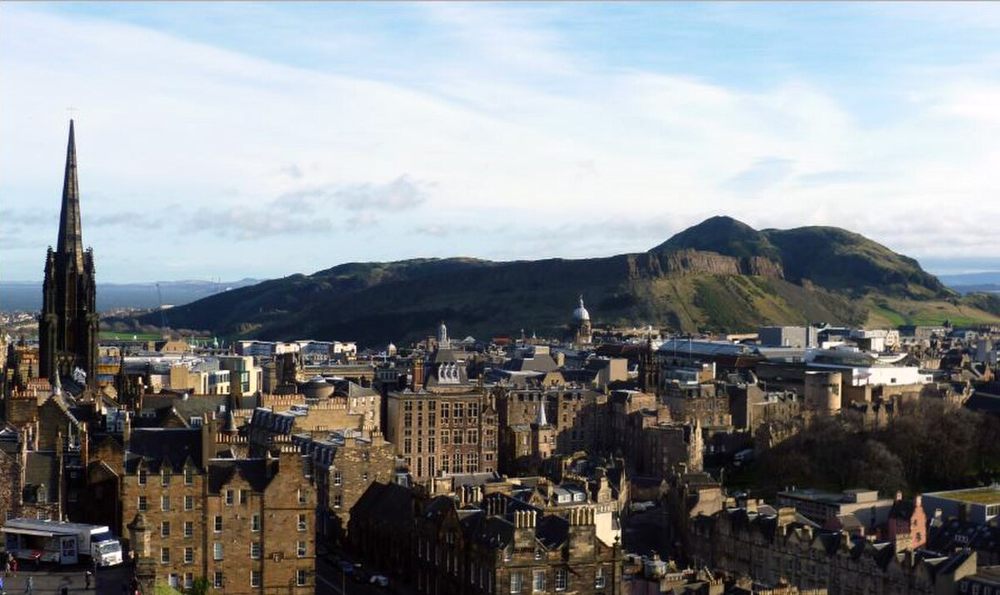
Édimbourg
10 – 12 août • 3 nuits
Pentland Hills au sud pour une mise en jambes sérieuse, Arthur's Seat en ville pour le panorama. Fringe Festival en août : spectacles gratuits dans les rues. Jardins botaniques royaux (gratuit, 28 hectares).
Randonnées
Pentland Hills — 5 sommets
moyen
tous
17 km • 960 m D+ • 4-5h
Boucle des 5 sommets depuis Threipmuir. Scald Law (579 m), point culminant. Mise en jambes idéale.
Pentland Hills — 5 sommets
moyen tousLa chaîne de collines au sud d'Édimbourg, paradis des randonneurs locaux. Départ du Threipmuir Reservoir (parking gratuit, 20 min en voiture). On enchaîne Turnhouse Hill (506 m), Carnethy Hill (573 m), Scald Law (579 m, point culminant), puis East Kip et West Kip. Terrain herbeux avec quelques passages raides et boueux après la pluie. Aucune difficulté technique. Vues spectaculaires sur le Firth of Forth au nord et les Borders au sud. Peu de monde comparé aux Highlands.
Terrain : Herbeux, passages raides, boueux par temps humide.
À prévoir : Eau et pique-nique. Pas d'abri ni de ravitaillement sur le parcours.
Arthur's Seat
facile
tous
5 km • 250 m D+ • 1h30 • gratuit
Volcan éteint, 251 m. Panorama 360° sur la ville, la mer et les collines du Fife.
Arthur's Seat
facile tousAncien volcan au cœur d'Édimbourg, vieux de 340 millions d'années. Du sommet (251 m), vue à 360° : le château, la vieille ville, le Firth of Forth, les collines du Fife. Deux itinéraires : par Dunsapie Loch (pente douce, sentier large) ou par le flanc sud depuis Holyrood (plus raide, 30 min de montée directe). Le parc autour est magnifique : falaises de Salisbury Crags, St Margaret's Loch. Idéal le soir d'arrivée pour le coucher de soleil.
Terrain : Sentier balisé, raide par endroits.
Astuce : Prévoir coupe-vent au sommet, même en août.
Royal Botanic Garden
facile
tous
Balade • 1-2h • gratuit (serres : 7,50£/adulte)
28 hectares de jardins. Serres victoriennes, arboretum, vue sur la ville.
Royal Botanic Garden
facile tousFondé en 1670, l'un des plus anciens jardins botaniques au monde. 28 hectares de pelouses, rocailles, et une collection de rhododendrons spectaculaire en été. Les serres victoriennes abritent des plantes tropicales, un palmier de 200 ans, et une serre tempérée (7,50£/adulte, gratuit <15 ans). Depuis Inverleith House, panorama sur la vieille ville et le château. Calme, hors des sentiers touristiques.
Horaires : 10h-18h en août.
Serres : 7,50£/adulte, gratuit <15 ans.
Hébergement


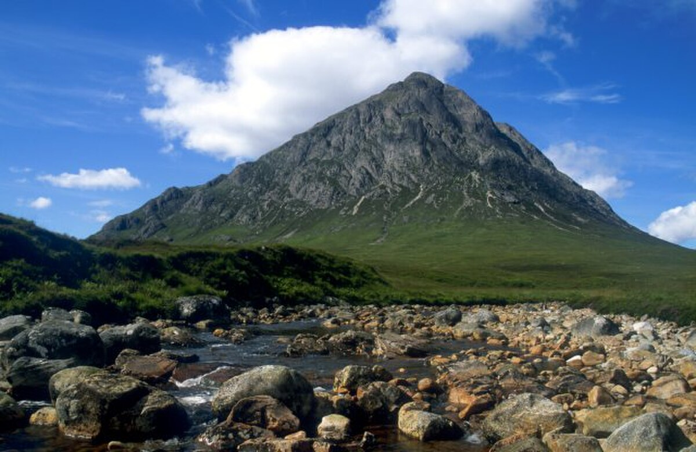
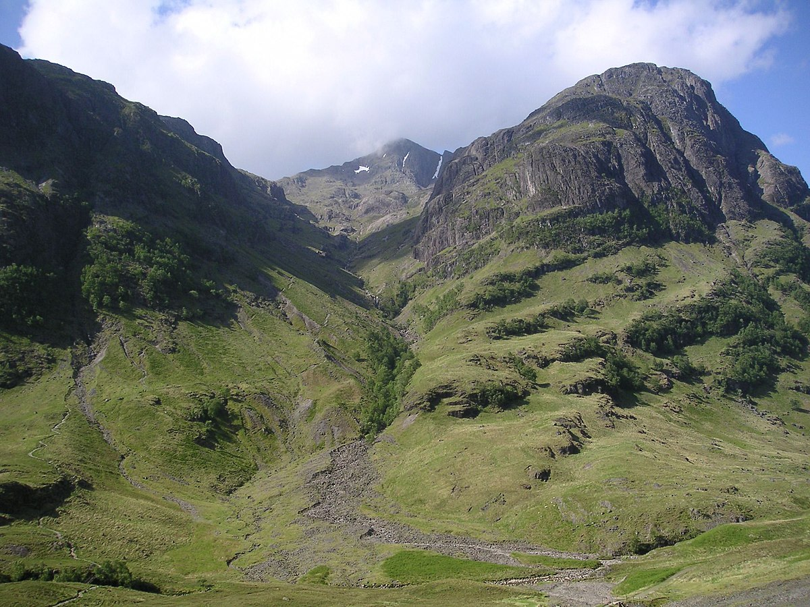
Glen Coe & les Highlands
13 – 16 août • 3 nuits
Vallée glaciaire au cœur des Highlands. Le plus beau terrain de randonnée d'Écosse. Sentiers pour tous : des balades en forêt aux arêtes de Munros.
Randonnées
Bidean nam Bian
sportif
tous
14 km • 1385 m D+ • 6-7h • parking gratuit A82
Point culminant d'Argyll (1150 m). 2 Munros. Course reine de Glen Coe.
Bidean nam Bian
sportif tousLa course reine de Glen Coe et le point culminant du comté d'Argyll (1150 m). Deux Munros en une journée : Stob Coire Sgreamhach (1072 m) et Bidean nam Bian. L'itinéraire classique remonte la Lost Valley (Coire Gabhail), vallée suspendue cachée entre les Three Sisters, puis gravit les pierriers raides vers la crête. Traversée aérienne jusqu'au sommet de Bidean, puis descente par Stob Coire nan Lochan (1115 m) avec vue plongeante sur le Glen.
Terrain alpin : pierriers instables, passages de scramble facile (grade 1), crêtes exposées au vent. Par brouillard, l'orientation est complexe.
Horaire : Départ 7h-8h. Journée complète.
Équipement : Carte OS, boussole, couches chaudes pour la crête, bâtons utiles.
Météo : Reporter si brouillard bas ou vent fort en altitude.
Devil's Staircase — WHW
moyen
tous
8 km A/R au col • 540 m D+ • 3-4h • parking gratuit
Col panoramique du West Highland Way (550 m). Vue sur le Ben Nevis et Buachaille Etive Mòr.
Devil's Staircase — WHW
moyen tousLe col le plus célèbre du West Highland Way, à 550 m d'altitude. Le sentier monte en lacets réguliers depuis Kingshouse — d'où le nom «l'escalier du diable». Du col, panorama exceptionnel : le Ben Nevis (plus haut sommet de Grande-Bretagne), Buachaille Etive Mòr en pleine face, et le Blackwater Reservoir en contrebas.
Sentier WHW bien balisé et entretenu, aucune difficulté technique. Aller-retour depuis Kingshouse : 8 km, 3-4h. Option : continuer la descente vers Kinlochleven (14,5 km au total, navette retour nécessaire).
Sentier : WHW balisé, bon chemin. Accessible à tous.
Astuce : Le pub du Kingshouse est parfait pour une bière au retour.
Lost Valley (Coire Gabhail)
moyen
tous
4 km • 335 m D+ • 2-3h • parking gratuit A82
Vallée cachée entre les Three Sisters. Court mais intense et spectaculaire.
Lost Valley (Coire Gabhail)
moyen tous
Coire Gabhail en gaélique, la «vallée cachée» où le clan MacDonald dissimulait son bétail volé. Coincée entre deux des Three Sisters, cette vallée suspendue est invisible depuis le Glen. Le sentier descend d'abord vers la rivière Coe, la traverse (pierres de gué, glissantes par temps humide), puis remonte raide entre les rochers. Scramble léger dans les blocs de l'éboulement, puis soudain la vallée s'ouvre : un plateau herbeux et plat suspendu à 350 m, encadré de parois verticales. L'un des endroits les plus atmosphériques d'Écosse.
Terrain : Traversée de rivière, pierres glissantes. Chaussures de rando obligatoires.
Combinable : Peut servir d'approche pour Bidean (continuer vers la crête).
Glencoe Lochan + Signal Rock
facile
tous
5 km • 50 m D+ • 1h30 • parking gratuit
Lac en forêt + sentier historique le long de la rivière Coe. Plat, calme, familial.
Glencoe Lochan + Signal Rock
facile tous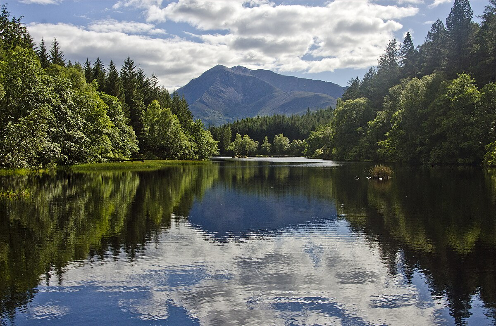
Un lac artificiel niché dans une forêt de pins et de mélèzes, créé au XIXe siècle par Lord Strathcona pour rappeler le Canada à son épouse. Le sentier fait le tour du lac en sous-bois (plat, bancs réguliers, très calme). On enchaîne avec le sentier vers Signal Rock, le long de la rivière Coe — c'est d'ici que le signal du massacre de Glencoe (1692) aurait été donné. Parfait pour un soir d'arrivée, un jour de repos, ou après la pluie quand les sommets sont dans les nuages.
Sentier : Plat, en partie accessible (Greenway). Bancs.
Hébergement


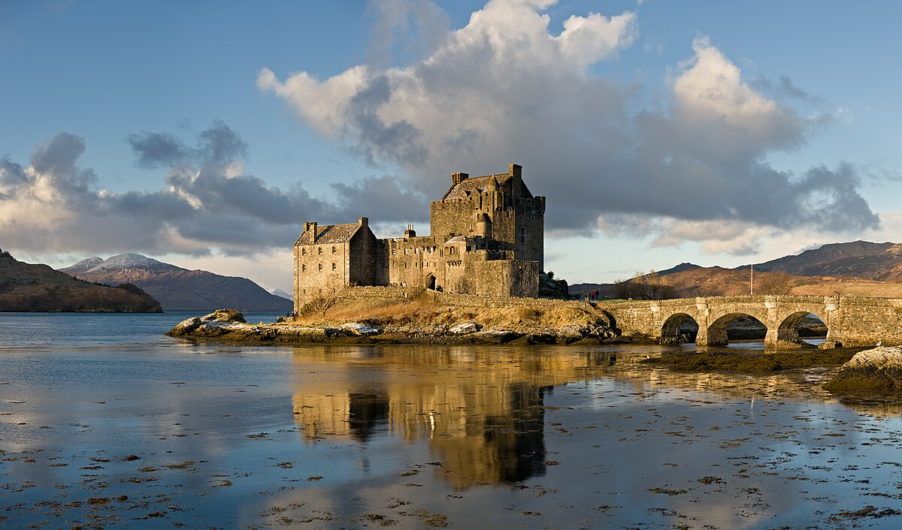
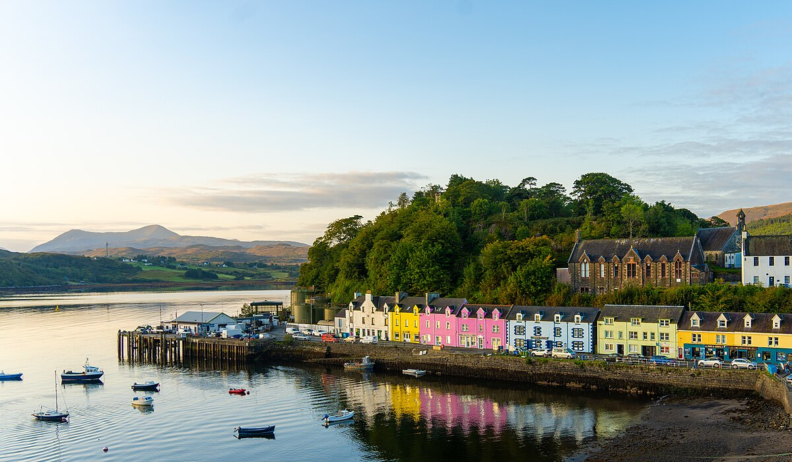
Île de Skye
16 – 19 août • 3 nuits
Formations rocheuses spectaculaires, piscines turquoise, falaises maritimes. Arrêt Eilean Donan Castle sur le trajet (entrée : 11£/adulte, gratuit <5 ans). Haute saison : partir tôt le matin.
Randonnées
Blà Bheinn (Blaven)
sportif
tous
8,2 km • 940 m D+ • 5-6h • parking gratuit
Munro isolé (928 m), le plus accessible des Cuillin. Vue sur toute la crête noire.
Blà Bheinn (Blaven)
sportif tousLe Munro de Skye par excellence. Isolé des Cuillin noirs, Blà Bheinn (928 m) offre le meilleur point de vue sur toute la crête : du Sgùrr nan Gillean au Sgùrr Alasdair, les 12 sommets en enfilade. Départ du parking au bord du Loch Slapin (route B8083). Le sentier suit le torrent Allt na Dunaiche sur un bon chemin rénové, puis le terrain change : pierrier raide dans un large couloir d'éboulis, scramble léger au sommet. La récompense est l'un des plus beaux panoramas d'Écosse. Pas de matériel d'alpinisme nécessaire, mais c'est une vraie course de montagne.
Terrain : Bon sentier puis pierrier raide, scramble léger.
Météo : Par temps clair uniquement — l'intérêt est la vue sur les Cuillin.
Quiraing — boucle
moyen
tous
6,8 km • 380 m D+ • 2h30-3h • parking gratuit
Plus grand glissement de terrain d'Europe. Paysage lunaire, aiguilles, plateaux cachés.
Quiraing — boucle
moyen tous
Le plus grand glissement de terrain actif d'Europe — la montagne bouge encore de quelques centimètres par an. La boucle traverse un paysage lunaire : The Needle (aiguille de 37 m), The Prison (colonnes de basalte), et surtout The Table, un plateau herbeux parfaitement plat caché derrière les aiguilles — les locaux y jouaient au shinty. Sentier bien tracé mais terrain instable par endroits. Lumière extraordinaire le matin tôt. Site de tournage de nombreux films (Macbeth, Stardust, 47 Ronin).
Sens : Antihoraire (montée face aux aiguilles).
Combinable : Avec Old Man of Storr le même jour (30 min de route).
Old Man of Storr
facile
tous
3,7 km A/R • 300 m D+ • 1h30 • parking 5£
Aiguille rocheuse la plus iconique de Skye (48 m). Sentier aménagé.
Old Man of Storr
facile tous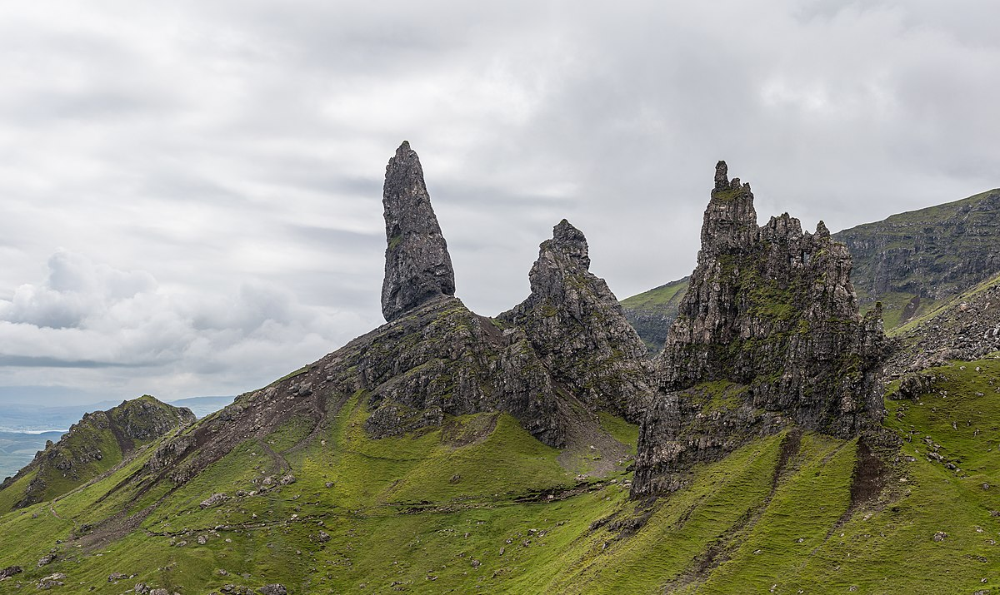
L'aiguille rocheuse la plus photographiée de Skye : 48 m de haut, visible depuis la route. Le sentier aménagé (rénové récemment, marches en pierre) monte raide mais court vers le sanctuaire de rochers. On ne grimpe pas le pinnacle lui-même (escalade technique), mais on marche entre les formations pour des vues vertigineuses sur la baie de Portree, Raasay, et par temps clair, les montagnes du continent. Site le plus visité de Skye.
Sentier : Aménagé, marches en pierre. Raide mais court.
Astuce : Arriver tôt ou en fin d'après-midi pour éviter la foule.
Fairy Pools
facile
tous
2,4 km A/R • plat • 1h • parking gratuit
Piscines naturelles turquoise. Baignade possible (~12°C).
Fairy Pools
facile tous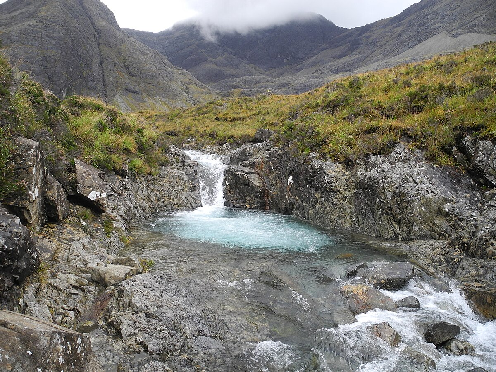
Une succession de piscines naturelles d'eau cristalline au pied des Cuillin noirs. L'eau est d'un turquoise irréel grâce au quartzite du lit de la rivière Brittle. On remonte le long des cascades sur un sentier facile. Baignade possible — l'eau est à environ 12°C même en août. Le cadre est saisissant : les bassins turquoise au premier plan, les sombres Cuillin en arrière-plan.
Baignade : Apporter maillot et serviettes. 12°C = froid mais vivifiant.
Astuce : Arriver avant 9h en août pour le calme. 25 min de route depuis Portree.
Neist Point
facile
tous
2,8 km A/R • 100 m D+ • 1h • parking gratuit
Phare à la pointe ouest. Coucher de soleil exceptionnel. Phoques, dauphins.
Neist Point
facile tous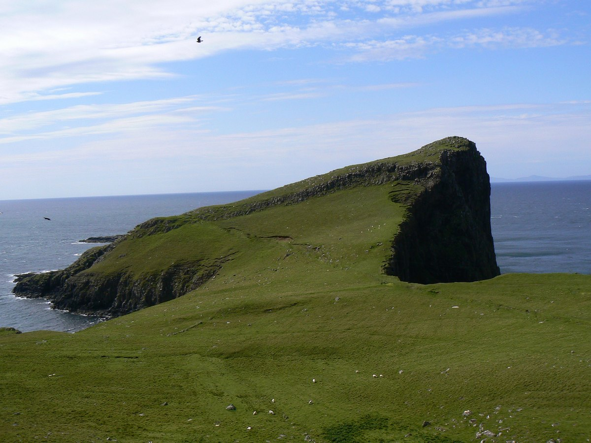
La pointe la plus à l'ouest de Skye, avec son phare blanc accroché aux falaises. Le sentier descend par des escaliers et un chemin côtier jusqu'au phare (automatisé depuis 1990). Les falaises sont vertigineuses, la vue sur les Hébrides extérieures immense. C'est LE spot pour le coucher de soleil en août — le soleil plonge dans l'Atlantique vers 21h. Possibilité d'observer des phoques gris sur les rochers, des dauphins au large, et parfois des pygargues à queue blanche.
Terrain : Escaliers raides, sentier côtier. Vent fréquent.
À prévoir : Jumelles pour la faune. Couche chaude. Rester loin des bords de falaise.
Hébergement

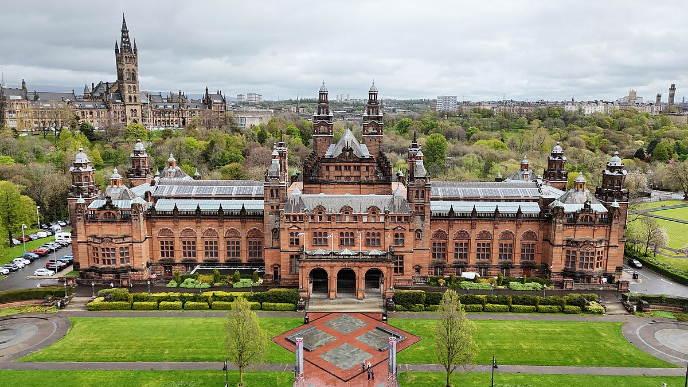

Glasgow
19 – 21 août • 2 nuits
Musées gratuits, architecture victorienne, quartier West End animé. Restitution du véhicule à l'arrivée. Tout à pied.
À voir
Kelvingrove Museum
tous
Gratuit • 2-3h
22 galeries : Dalí, Rembrandt, fossiles, armures. Spitfire au plafond. Orgue à 13h.
Kelvingrove Museum
tousUn des meilleurs musées gratuits de Grande-Bretagne. 22 galeries réparties sur 3 étages : art (Dalí, Rembrandt, Mackintosh), histoire naturelle, armures médiévales. Un Spitfire est suspendu au plafond de la salle centrale. L'orgue est joué quotidiennement à 13h — concert gratuit, acoustique exceptionnelle. Le bâtiment lui-même (grès rouge, 1901) est spectaculaire.
Horaires : Lun-Jeu & Sam 10h-17h, Ven & Dim 11h-17h.
Orgue : Concert gratuit tous les jours à 13h.
Kelvingrove Park + Université
tous
3 km • plat • 1-2h • gratuit
Rivière Kelvin, Université néo-gothique 1870 (Poudlard), jardin botanique.
Kelvingrove Park + Université
tous
Promenade le long de la rivière Kelvin, puis montée vers l'Université de Glasgow — le bâtiment Gilbert Scott (néo-gothique, 1870) est souvent comparé à Poudlard. Cloître, tour, quadrilatère : tout est accessible et gratuit. Le Hunterian Museum (gratuit) à l'intérieur vaut le détour. Continuer vers le Jardin Botanique (gratuit, serres victoriennes spectaculaires) puis redescendre vers Byres Road pour les restaurants, cafés, librairies d'occasion et friperies.
Jardin Botanique : Gratuit. Serres Kibble Palace remarquables.
Byres Road : Ashton Lane pour dîner (ruelles pavées, guirlandes lumineuses).
Hébergement

Infos pratiques
Véhicule
Location Édimbourg, restitution Glasgow. Conduite à gauche. Routes Highlands souvent à voie unique avec passing places.
EDI → Glen Coe : 2h30
Glen Coe → Skye : 2h
Skye → Glasgow : 5h
Météo août
12-18°C. Pluie fréquente. Vêtements imperméables indispensables. Jour jusqu'à 21h environ. Midges (moucherons) dans les Highlands : répulsif Smidge.
Cartographie
Équivalent IGN : Ordnance Survey. Même échelle, courbes de niveau.
OS Maps — consultation en ligne.
Walkhighlands — fiches et traces GPS.
Budget indicatif (4 pers.)
Vols A/R 4 pers. : CHF 640-1440 (~£550-1250)
Hébergement : 120-280£/nuit
Location véhicule 11j : 500-700£
Carburant : ~150£
Alimentation : 60-100£/jour
Château Édimbourg : 19,50£/adulte, 12,50£ 5-15 ans
Eilean Donan : 11£/adulte, 7£ 5-15 ans
Musées Glasgow : gratuits
Parkings rando : gratuits (sauf Storr 5£)
Total estimé : ~6000-9000£ (vols + 11 nuits, 4 pers.)
Donner ton avis
Une suggestion sur l'itinéraire, un hébergement, une rando ? Envoie-nous ton avis en un clic.